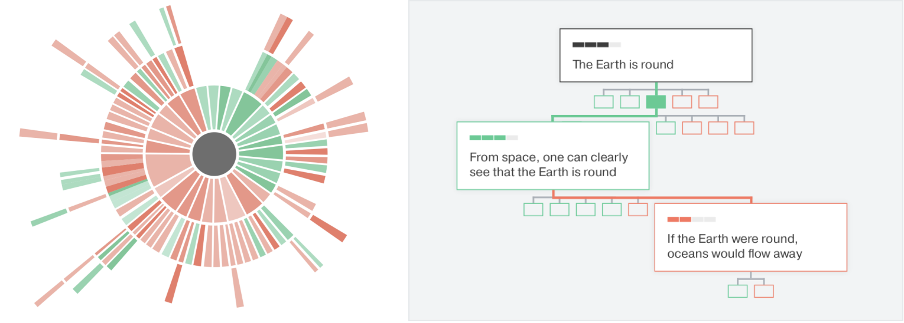

Networked systems went through several phases over the past 40 years. In the first phase the network was a vessel for movement of data. The second processed and stored that data in order to allow users access to services that provide unique value like music, entertainment, and e-commerce, and the third was primarily powered by large companies that added social layers to these troves of services thereby allowing effective curation and recommendation of products and ads.
We are now in a phase of an imperfect symbiosis between the real world and its virtual projection, allowing offline phenomena (good and bad) to leak onto the online world and vice versa. In these projects I attempt to measure, model, and design systems that understand and quantify human behaviour in this fourth phase of networked systems.